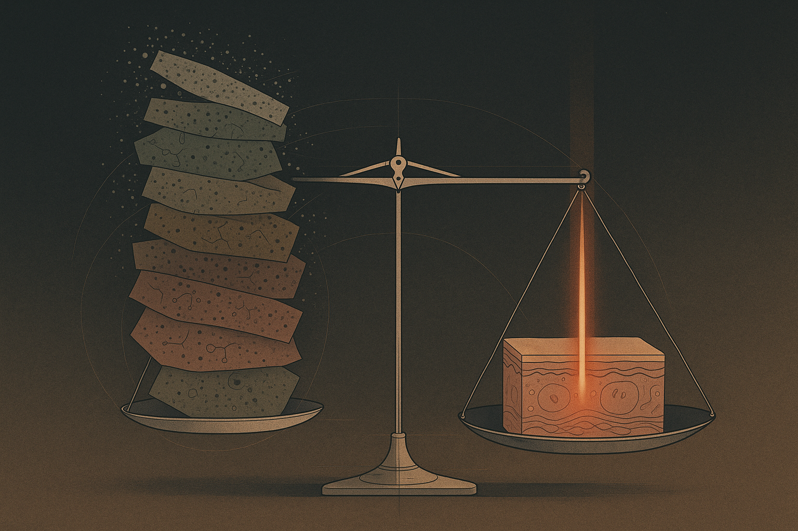
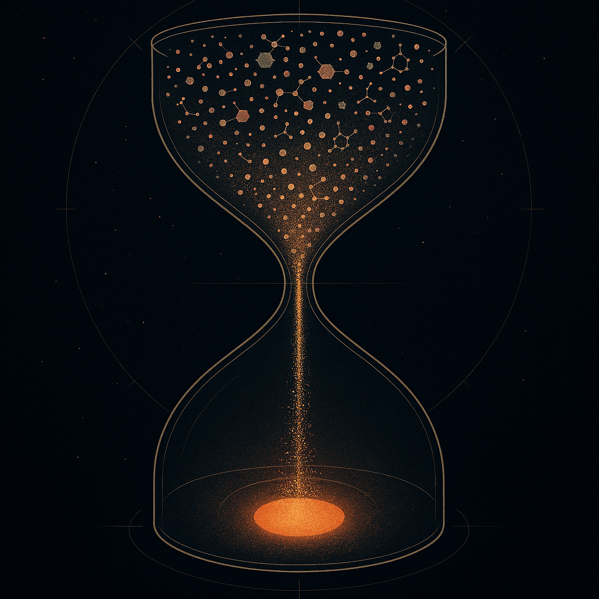
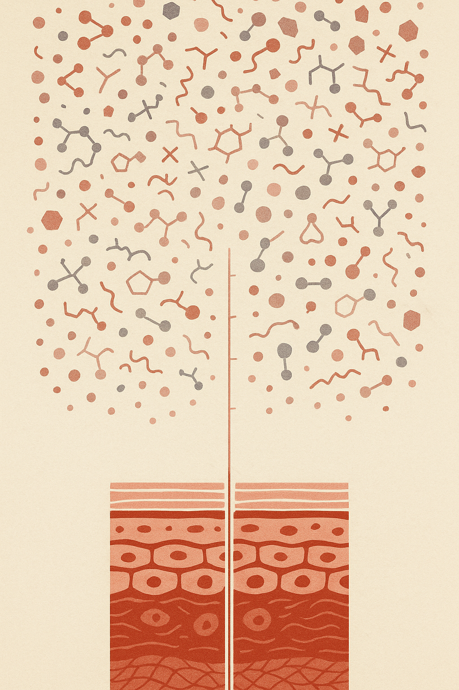

Review below. Reply approve to publish the Facebook post, or tell me edits.

Add up what is on your bathroom shelf right now. Not the aspiration, the actual spend.
Most of us have never done this sum, and there is a reason. The numbers are uncomfortable. Skincare is bought one bottle at a time, so it never feels like a big line in the budget. But it behaves like a subscription you never signed up for, and 2026 is the year a lot of people are quietly cancelling parts of it.
Before we mention our own price (we will, near the end, plainly), let us do the arithmetic honestly.
Take a single serum. In Australia, a mid-range one sits somewhere between $40 and $120. Used as directed, it runs out in roughly 6 to 10 weeks. That is not a one-off purchase, it is a cycle: five to eight repurchases a year, per product.
Now count the shelf. Most routines that have been "optimised" over a few years hold three or four active products in rotation: a vitamin C, a retinol or retinal, a niacinamide, an exfoliating acid, maybe a peptide. Run the cycle across all of them and a modest shelf is a recurring habit of several hundred dollars a year. A generous shelf clears a thousand without ever feeling expensive, because no single transaction did.
And here is the quieter cost. A good portion of that spend never gets finished. A serum stings, or pills under sunscreen, or simply gets demoted when a newer promise arrives, and it goes to the back of the cabinet half-full. The industry has a polite name for this, product churn. Your bathroom bin has a more honest one.
If you have noticed the word "skinimalism" appearing everywhere, this is why. It is not a fad aesthetic. It is a correction.
Fewer, multifunctional products used consistently is a barrier-respecting response to a decade of layering. Dermal science has been saying the quiet part for a while: your skin barrier is not a canvas with unlimited capacity. It is a living structure with a tolerance.
Which leads to the counter-intuitive point that saves both money and skin.
Layering a vitamin C over an acid over a retinoid is not addition, it is often interference. Stack enough actives and you can irritate the barrier and trigger exactly the low-grade inflammation you were buying products to calm. Redness, sensitivity, breakouts, then a new product to fix those, and the cycle feeds itself.
Sometimes the economical move and the skin-kind move are the same move: doing less, more consistently. Subtraction is not giving up on your skin. For a lot of shelves, subtraction is the upgrade.
This is where LED sits in the sums, and it sits differently to everything else on the shelf.
Red light therapy (the proper name is photobiomodulation) works by exposure, not absorption. Specific wavelengths of visible light, red at 630 nanometres among them, can gently nudge the cells that produce collagen and elastin to work a little more efficiently. Nothing is applied. Nothing is layered onto an already busy barrier. Nothing runs out.
That last part is the economic point. A light habit is not another bottle with a repurchase cycle attached. It is one up-front cost, then ten minutes a day, for as long as the device keeps working. No refills, no empties, no half-used graveyard.
We are not going to sell you a miracle here, so let us name what light does not do.
It does not replace your cleanser, your sunscreen or your moisturiser. Those stay. It is not a dermal filler and it is not a cure for any skin condition. It is a cosmetic device. And the device itself is not the active ingredient, consistency is. Realistic expectations look like this: some visible glow and evenness within a week or two, and the finer-line, firmness territory at the 4 to 8 week mark, only if you actually show up for the ten minutes most days.
This is subtraction as maintenance, not magic. Closer to flossing than to a facelift.
Here is where we stand in your sums.
The Redermis mask covers face and neck together: 70 RGB LED chips in the face piece, 33 in the neck piece, 309 emission points, seven colour settings built from red, blue and green primaries. It charges by USB-C and runs cordless, so the ten minutes can happen on the couch.
It is currently $99, down from $249.95. That is 60 percent off, and we will be straight about why: Redermis is new, we do not yet have a wall of reviews, and we are not going to invent one. The lower price is how we earn the first ones. Set $99 once against a serum cycle that quietly costs that much every couple of months, and the maths is the pitch. We do not need urgency on top of it.
You are also not taking a leap on an anonymous overseas listing. Orders are fulfilled locally in Australia, and your rights under Australian Consumer Law apply in full: if the device is faulty, you are entitled to a remedy, no fine print required.
If the arithmetic on your own shelf is telling you something, the mask and the full spec are here. Judge it against everything above. Ten minutes a day, one purchase, and possibly a lighter shelf.

Run the maths with us. A serum every 6 to 10 weeks quietly adds up to a few hundred dollars a year, and the bill recurs forever. There is a skin cost too: stacking more actives can irritate your barrier, which is why dermatologists keep talking about skinimalism. Sometimes doing less, consistently, is both cheaper and kinder to your skin.
That is where light fits. An LED mask is not another bottle to re-buy. Ten minutes a day, and it never runs out.
Honesty first: it will not replace your cleanser, sunscreen or moisturiser, it is not a filler or a cure, and consistency over 4 to 8 weeks is what does the work. Redermis is a new Australian brand, one product, still earning its reviews and not inventing any.
While we are new it is $99, down from $249.95 (60% off). One up-front cost against a shelf you keep re-buying: https://redermis.com.au/products/medical-grade-silicone-7-wevelenghts-photon-led-mask-face-and-neck-red-light-therapy-flexible-facial-mask-repair-skin-wireless-use
And tell us below: what is the one skincare product you actually finished the bottle of?
## Hashtags
#skinimalism #redlighttherapy #skincareroutine #australianskincare

The most economical skincare decision is usually subtraction.
Run the numbers on your shelf.
A serum lasts 6 to 10 weeks. At $40 to $90 a bottle, three or four actives on rotation is easily several hundred dollars a year. Every year.
And the shelf keeps growing, because when one thing does not deliver, the instinct is to add another.
Here is the quiet problem with that: stacking more actives is one of the most common ways skin ends up irritated instead of improved. Barrier first, fewer things, done consistently. Most good dermal advice comes back to that.
So the win is rarely the next bottle. It is subtraction, plus one habit you can actually repeat.
That is where light earns its spot in the sums. An LED mask is not another thing that runs out. Ten minutes a day, 7 wavelengths, face and neck covered by 309 emission points, recharged over USB-C. One cost, no refill cycle.
Honest bit: it is not a filler, not a cure, and it does nothing overnight. The real work is consistency, with visible change sitting in the 4 to 8 week range.
We are a new Australian brand with one product, still earning our reviews, and we are not going to invent any.
New-brand test price: $99, down from $249.95 (60% off). One cost, no refill cycle. Link in bio.
## Hashtags
#skinimalism #slowbeauty #skincareroutine #redlighttherapy #ledmask #australianskincare #skinlongevity #athomeskincare #skincarecosts #lessismoreskincare #skincarehabits #ausbeauty
## Title
Red Light Therapy at Home: The Skincare Maths That Favours Subtracting Serums, Not Adding More
## Description
Tally your skincare shelf honestly: a few $60 serums replaced every three months quietly adds up to more per year than most one-time tools. Red light therapy at home flips that maths: one LED face mask, ten minutes a day, no refills and no expiry dates, just a repeatable habit that supports collagen and visibly better tone over weeks, not overnight. Ours covers face and neck with 7 light colours and 309 emission points, runs wireless on USB-C, and is currently $99 at 60% off while we are still a new brand earning our reviews. Do the sums, then judge it for yourself: https://redermis.com.au/products/medical-grade-silicone-7-wevelenghts-photon-led-mask-face-and-neck-red-light-therapy-flexible-facial-mask-repair-skin-wireless-use
## Hashtags
RedLightTherapy LEDFaceMask RedLightTherapyAtHome SkincareRoutine SkinCareTips
Note: this pin reuses the Instagram image (no separate image is generated for Pinterest).